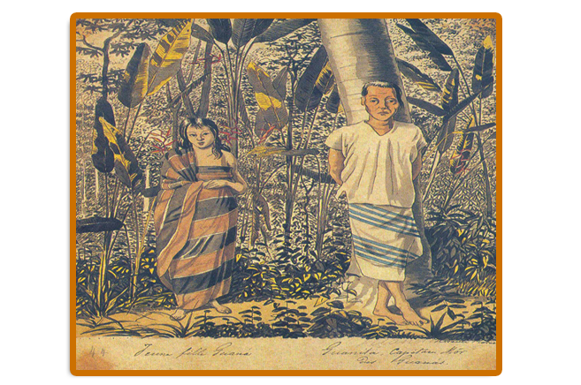

2. POVOS GUANÁ E SUAS “HABILIDADES EM CULTIVAR PLANTAS”
Figura 01: Índios Guaná
Fonte: Hercule Florence (1977, p. 104)
1. Atualmente
Os povos Indígenas Guaná oficialmente nunca possuíram terras demarcadas no território brasileiro. Contudo, o site oficial da FUNAI informa que há oito Terras Indígenas demarcadas para os subgrupos
Terena e Kinikináu nos territórios de Mato Grosso e Mato Grosso do Sul.
A maioria dessas TI demarcadas estão no estado de Mato Grosso do Sul e pertencem ao Subgrupo
Terena, sendo compostas pela: Cachoeirinha, Limão verde, Nioque, Nossa Senhora de Fátima, Pilad Rebuá, Taunay/Ipegue, Buriti e Lalima (esta última pertencem aos
Terena e Kinikináu) . Enquanto, no estado de Mato Grosso a TI existente pertence ao subgrupo Terena e denomina-se Terena Gleba Iriri.
A historiadora do ensino de História, Circe Bittencourt e a antropóloga Maria Elisa Ladeira publicaram a obra A história do povo Terena (2000), a partir de uma pesquisa com um dos subgrupos Guaná, os Terena, as autoras afirmam que:
Atualmente todos estas nações que compunham os Guaná estão agrupadas sob a denominação de Terena (Efeienoe), apesar de muitos dos velhos saberem se são descendentes dos Layana ou Kinikinaua (Equiniquinao). (BITTENCOURT; LADEIRA, 2002, p.36).
Essa informação de que os Terena seriam um dos últimos subgrupo dos Guaná que sobreviveram ao contato com os conquistadores também foi noticiada por Cardoso de Oliveira em estudos na década de 70, do século XX. Por outro lado, esse autor destaca uma situação muito interessante, apesar do contato entre os Guaná e colonizadores ter quase extinguido esses indígenas. Segundo Cardoso de Oliveira (1976, p. 21) “[...] vem tendo sua população sensivelmente aumentada”.
2 Aspectos históricos e culturais dos Guaná
Para compreender a história dos povos indígenas Guaná, a pesquisa do antropólogo Roberto Cardoso de Oliveira (1976) em –
Do Índio ao Bugre – destaca a classificação dos Guaná em subgrupos (Terena, Layâna, Exoaladi e Kinikináu) e sua localização antes dos primeiros contatos com os espanhóis. Sendo um povo indígena pertencente à família linguística Aruak. Sendo uma nação que pertence à família linguística Aruak e primeiros tempos viviam na região do Chaco no Paraguai, país que faz fronteira com o Brasil.
Ainda, segundo Roberto Cardoso de Oliveira (1976) nos primeiros tempos viviam na região do Chaco no Paraguai, país que faz fronteira com o Brasil. Conforme podemos observar no mapa de Metraux (1946) apud Castro (2010, p. 147) que mostra a região do Chaco e vários povos indígenas Guaná:
Mapa 01: Distribuição dos Povos Indígenas no Chaco..
Fonte: CASTRO, Iara Quelho (2010, p. 147).
A migração dos Guaná para o Pantanal Mato-grossense ocorreu a partir do contato com os não indígenas, ou seja com os colonizadores portugueses e espanhóis, no iniciou e decorrer do século XVIII. A partir desse contato, ocorreu uma forte migração dos Guaná e de seus subgrupos para o lado lusitano, atravessando rio Paraguai, para suas margens orientais (hoje, região do Pantanal, no sul de Mato Grosso).
Os Guaná, destacaram-se na região do Chaco (Paraguai) por causa de suas habilidades em cultivar plantas. Segundo Cardoso de Oliveira (1976, p. 31), as primeiras informações historiográficas em meados do século XVI através do viajante espanhol Alvas Núñez Cabeza de Vaca definiu os Guaná “[...] índios possuidores de uma agricultura bem desenvolvida [...]”. E afirmou que cultivavam a terra durante o ano inteiro, tendo bons resultados.
De acordo com a análise de Iara Quelho de Castro (2011), sobre os Guaná no período pré-colonial, antes dos colonizadores chegarem os Guaná praticavam a captura principalmente de mulheres e crianças “[...] eram incorporados na camada social dos “comuns” (wahere), respondendo a ambição dos seus caciques de organizar grandes aldeias produtivas, reunindo o maior número de pessoas.” (CASTRO, 2011, p. 118).
O propósito disso era ter mão de obra para o cultivo de roças e tecelagem. E, para o qual também praticavam o comércio. A autora ainda destaca que “[...] Os viajantes Chané-Guaná, portanto, percorriam grandes extensões territoriais para realizarem suas trocas (COSTA, 2011, p. 82).
Outro fator importante sobre a história dos Guaná é a ligação com os povos indígenas Mbayá-Guaikurú, que também viviam na região do Chaco (hoje, Paraguai), indicada por Cardoso de Oliveira (1976, p.31) ao descrever o testemunho do viajante e cronista Ulrico Schmidl, sobre a relação de submissão dos Guaná pelos Mbayá- Guaikurú.
Entretanto, Bittencourt e Ladeira (2000, p. 36) referem-se a essa relação como de aliança. “[...] A história das duas nações mostra que as alianças feitas entre elas foram muito importantes nas lutas contra tribos inimigas e contra espanhóis e portugueses.” Sendo que Segundo as autoras, esta convivência foi possível justamente pelo fato de terem um modo de vida diferente: os Guaná eram hábeis agricultores e os Mbayá-Guaikurú além de controlarem um vasto território, suas atividades em busca de alimento eram relacionados a caça e a pesca. Sendo que, esta ligação que permaneceu mesmo quando houve a migração para região pantaneira de Mato Grosso.
As autoras Bittencourt e Ladeira (2000), indicam que essas alianças se corporificavam por meio de trocas de alimentos cultiváveis, roupas de algodão e outros produtos, em contra partida, os Mbayá-Guaikurú forneciam ferramentas (facas e machados de ferro) para utilizarem na plantação. Além de fazer a segurança dos Guaná contra seus inimigos.
Povos Mabayá-Guaikurú, que podemos observar através da aquarela de J. B. Debret em 1834 chamada a Carga da Cavalaria:
Figura 02: A aquarela de J. B. Debret, a Carga da Cavalaria Guaikurú -1834.
Fonte: João Carlos de Souza (2019, p. 63).
3. O modo de vida e atividades dos Povo Indígenas Guaná
A aliança entre os povos indígenas Mbayá-Guaikurú e os Guaná baseavam-se nas trocas de produtos e de segurança como apontou a pesquisa de Verone Cristina Silva (2001) que, ainda destacou outras práticas sociais realizados entre os Guaná e Mbayá- Guaikurú como “[...] as relações de casamento, a presença de filhos nascidos da união entre Guaná e Guaikurú e ainda crianças Guaná criadas entre os Guaikurú, com comportamentos e práticas culturais semelhantes aos deles.” (SILVA, 2001, p. 25). Da mesma forma a autora aponta que a relação entre os Guaná e Mbayá- Guaikurú que em alguns momentos dessa relação houve conflitos por seus interesses.
Para Bittencourt e Ladeira (2000), os Mbayá- Guaikurú eram considerados um povo guerreiro. E, desde os primórdios enfrentaram e lutaram com outros povos indígenas e com os colonizadores. Mesmo quando se deslocaram através do rio Paraguai no Pantanal para imediações de Corumbá, mantiveram a fama de guerreiros aguerridos. Continuaram utilizando as mesmas estratégias de antes para se impor aos demais povos indígenas e desafiar os colonizadores na região. Esta relação entre indígenas se configurava e reconfigurava em alianças e conflitos.
As autoras apontam uma situação interessante que nos faz manter a visão de aliança e conflito entre os indígenas, conforme o interesse de cada povo, pois indicam o acordo celebrado entre Mbayá- Guaikurú e portugueses em 1791. Asseguraram um tratado que os transformou em súditos de Portugal. A partir deste acordo:
Este contato dos Guaná com os não indígenas foi reforçado com um comércio intenso entre os brasileiros e os Guaná, que ampliaram suas produções de alimentos cultivando roçados. Conforme registrou o viajante Francis Castelnau em sua expedição pelas Regiões Centrais da América do Sul, no ano de 1845, ao descrever novas práticas econômicas introduzidas a partir do contato com o colonizador:
Os Guanás são trabalhadores e ocupavam-se da agricultura; plantam cana-de-açúcar, arroz, algodão, mandioca, feijão, banana, milho, cará e batata doce; constroem engenhocas para moer cana, fabricam rapadura e distilam aguardente em alambique de barro, com um cano de espingarda servindo de pescoço. Fabricam também vasilhas de barro. (CASTELNAU, 1949, p. 247).
Assim como, retratou o viajante Hercule Florence em sua expedição entre os anos 1825 a 1829, quando teve contato com os Guaná, ele registrou através do desenho duas canoas desse povo rumo à Cuiabá, demostrando a presença da atividade comercial realizada pelos indígenas Guaná em contato com os colonizadores
Figura 03: Duas pirogas dos Guaná que vão à Cuiabá
Fonte: Hercule Florence (1977, p. 105)
Castelnau, como outros viajantes, elogiava os Guaná por suas vestimentas. Desde os primeiros contatos admiraram sua grande habilidade em fabricar e tingir tecidos. Relataram que estas atividades eram desenvolvidas pelas mulheres Guaná. Silva (2001) aborda a narrativa do Barão de Langsdorff e mostra o interesse e a curiosidade dos Guaná e exalta a qualidade dos tecidos produzidos pelas mulheres:
[...] Os panões dos Guaná e observou que além de belos e resistentes, eram impermeáveis à chuva, tendo servido muitas vezes para cobrir os acampamentos da expedição. Para o viajante era uma mercadoria de grande valor econômico. (SILVA, 2001, p. 38).
Na imagem da figura 09, trata-se de uma ilustração de Hercule Florence (1825-1829), que acompanhou a Expedição Langsdorff. O artista viajante detalha as roupas produzidas e usadas pelas mulheres Guaná.
Figura 03: Moça Guaná e Guanitá, chefe dos Guaná e vestimentas

Fonte: (BITTENCOURT; LADEIRA, 2000, P.43).
Outra característica dos Guaná, diz respeito suas moradias fixas em lugares em que podiam realizar o cultivo dos roçados. Ao contrário dos Guató e Guaicuru, suas aldeias eram grandes e reuniam uma população numerosa, pois, pela produção agrícola complementada com a caça, pesca e extrativismo asseguravam a sua subsistência no local com a produção de excedentes para as trocas.
Silva (2001) aponta que as habitações dos Guaná foram descritas pelo naturalista Alexandre Rodrigues Ferreira entre os anos 1783 e 1792. Este referia-se ao formato de suas habitações como casa oval nas proximidades do presídio de Nova Coimbra. Eis, em suas palavras:
O naturalista lembra que os Guaikurú não construíam habitações fixas como os Guaná, mas aldeias temporárias, abrigando-se em “esteiras de piri-piri” horizontalmente estendidas; todos dormiam no chão sobre couros de boi ou peles de onça, de veado, de porcos do mato e de ariranhas, cobertos cada um, por um grande cobertor de algodão listrado de branco, vermelho e negro. (SILVA, 2001, p. 23).
Na citação de Silva (2001), indiretamente, constata-se que os Guaná construíam casas fixas e permanentes ao contrário de seus aliados Guaicuru. Essas moradias sofreram mudanças ao longo do tempo, sendo influenciadas pelo Regulamento acerca das Missões de Catequese e civilizações dos Índios, lei governamental criada para indígenas em 1845. Silva (2001) refere-se as descrições das casas dos Guaná, do naturalista francês Castelnau, da metade do século XIX, quando cita que as casas eram “[...] dispostas em forma quadrangular” (SILVA, 2001, p. 23).
Não significa que todas as moradias do povo indígenas Guaná a partir deste período foram construídas no padrão do regulamento impostos pelas autoridades da época. Silva (2001) analisou outras fontes do mesmo período e encontrou um desenho de moradias dos Guaná feita pelo cronista e engenheiro militar Alfredo d'Escragnolle Taunay, em 1864, durante a Guerra do Paraguai, na Serra de Maracaju, com o mesmo formato tradicional, como foi registrado por Alexandre Rodrigues Ferreira.
Entre os anos de 1843 e 1844 segundo Silva (2001, p. 93) seus estudos apontam o início de uma migração dos Guaná de Albuquerque (hoje, Corumbá - MT) para Cuiabá (MT), mais especificamente na margem direita de rio Cuiabá, local que foi concedido pelo Presidente da Província de Mato Grosso. Porém, antes da migração para a região de Cuiabá, os Guaná cogitaram em migrarem e fixarem na região de Vila Maria.
Essa decisão mostra que os indígenas também souberam impor seus interesses perante os colonizadores. Esta questão Almeida (2003) abordou no artigo
Identidades Étnicas e Culturais: Novas Perspectivas para a História Indígena:
Os povos indígenas não estavam na América à disposição dos colonizadores, nem com eles colaboraram por ingenuidade ou tolice. Ao contrário, responderam ao contato de acordo com suas próprias motivações, ligadas à dinâmica de suas organizações sociais, que igualmente se modificam no decorrer do processo histórico. (ALMEIDA, 2003, p. 29).
No momento que resolveram se fixar em Cuiabá, os Guaná mantiveram suas motivações e interesses acima de tudo. Queriam romper com os Mbayá-Guaikurú a aliança de longa duração. Já que firmaram este acordo com os Guaicuru quando seus interesses, no Chaco paraguaio, estiveram ameaçados por outros povos inimigos.
Contudo, a maior motivação da decisão dos Guaná da mudança seria o interesse em expandir o comércio, como possibilidades de ampliarem as diversas atividades econômicas que exerciam. Dados descritos por Silva (2001) contemplam seus interesses aos formar alianças com autoridades de Mato Grosso:liarem as diversas atividades econômicas que exerciam. Dados descritos por Silva (2001) contemplam seus interesses aos formar alianças:
[..] as terras concedidas pelo Presidente da Província, localizadas na margem direita do rio Cuiabá, em frente ao Porto Geral, passando a interagir diretamente com o cotidiano da cidade. Trabalhavam como remadores de embarcações que faziam o trajeto de Cuiabá a Corumbá, chegando mesmo até a Província de São Paulo; e também como comerciantes, carregadores, coletores da poaia, trilhadores de estradas, entre outras atividades. (SILVA, 2001, p. 6).
Para finalizar, os Guaná souberam impor interesses e fizeram sua própria história. Foram integrados pelos moldes da colonização como aliados sem deixar de ser índios Guaná. Silva (2001, p131), demostrou que os Guaná e seus descendentes ainda estão na cidade de Cuiabá e nos arredores socializando-se e fazendo sua história. Continuam lutando pelo seu espaço e vivenciando a nova realidade que experimentaram com o passar do tempo.
Por Luciana Martinez de Oliveira Costa.
COSTA, Luciana Martinez de Oliveira. A Presença de Povos Indígenas Chiquitano, Bororo, Guató e Guaná em Vila Maria do Paraguai e São Luiz de Cáceres (1778-1874): Uma Abordagem de Temática Indígena Na Educação Básica. Cáceres, 2020. Dissertação (Mestrado Profissional ProfHistória), Unemat.
1.5 REFERÊNCIAS BIBLIOGRÁFICAS
ALMEIDA, Maria Regina Celestino. Identidades Étnicas e culturais: novas perspectivas para história indígena. In:_______; ABREU, Martha; SOIHET, Rachel (Org.) Ensino de História Conceitos, temáticas e Metodologia. Rio de Janeiro: Casa da Palavra, 2003.
BITTENCOURT, Circe Maria; LADEIRA, Elisa Maria. A História do Povo Terena. Brasília: MEC, 2000.
CASTELNAU, Francis. Expedição às Regiões Centrais da América do Sul. Trad. São Paulo: Companhia Editora Nacional. 1949, 2 vls.
CASTRO, Iara Quelho. De Chané-Guaná a Kinikinau:da Construção da Etnia ao Embate entre oDesaparecimento e a Persistência. Campinas, SP. Tese (Doutorado antropologia), IFCH/UNICAMP. 2010.
FLORENCE, Hércules. Viagem do Tietê ao Amazonas de 1825 a 1829. Trad. Editora Cultrix, Universidade de São Paulo, 1977.
FUNAI. Terras indígenas. Disponível em Funai.gov.br
PEREIRA, Sonia Maria Couto. Etnografia e Iconografia nos Registros Produzidos Por Hércules Florence Durante a Expedição Langsdorff na Província do Mato Grosso (1826-1829). Dourados, MS. 2008. Dissertação (Mestrado em História) Universidade Federal da Grande Dourados.
OLIVEIRA, Roberto Cardoso. Do índio ao Bugre: o processo de assimilação dos Terena. 2º edição. Rio de Janeiro: Livraria Francisco Alves Editora, 1976.
SILVA, Verone Cristina. Missão, Aldeamento e Cidade: os Guaná entre os Albuquerque e Cuiabá. Cuiabá, MT, 2001. Dissertação (Mestrado em História), ICHS – UMFT.
SILVA, Verone Cristina. Missão, Aldeamento e Cidade: os Guaná entre os Albuquerque e Cuiabá. Cuiabá, MT, 2001. Dissertação (Mestrado em História), ICHS – UMFT.
SOUZA João Carlos. Os Guaicuru-Kadiwéu e a Sociedade Sul-matogrossense, Brasil: Iconografia, Mito e Apropriações. Revista Euroamericana de Antropología, n.º 8, 2019, pp. 57-72. Disponível em: file:///C:/Users/Pro%20Win8.1/Downloads/21479-72294-1-SM%20(1).pdf. Data de acesso: 06 julho. 2020.